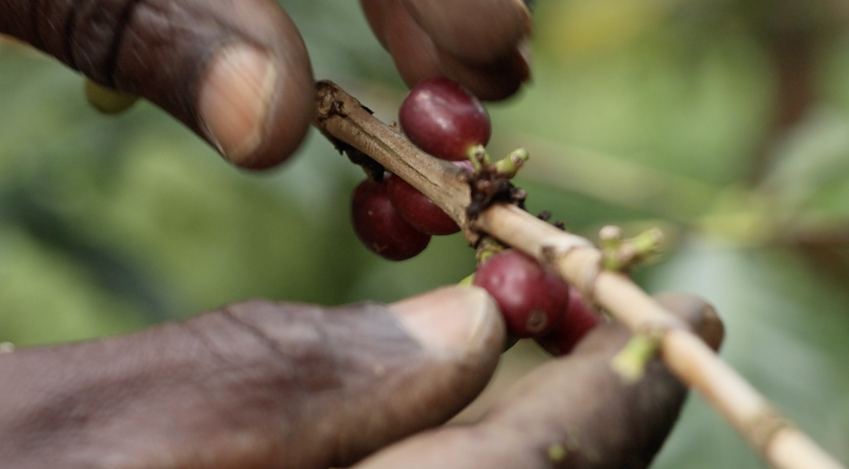

<!-- body start -->
<header>
  <div class="wrapper" style="display:flex;justify-content:space-between;align-items:center;gap:1rem;">
    
    <nav>
      <ul>
        <li><a href="#services">Services</a></li>
        <li><a href="#sustainability">Sustainability</a></li>
        <li><a href="#slowfood">Slow&nbsp;Food</a></li>
        <li><a href="#liberica">Liberica&nbsp;Project</a></li>
        <li><a href="#calendar">Harvest&nbsp;Calendar</a></li>
        <li><a href="#contact">Contact</a></li>
      </ul>
    </nav>
  </div>
</header>

<section class="wide-block" style="margin-top:0;">
  <div class="content wrapper">
    <h1 style="font-size:2rem;margin-top:1rem;">Direct specialty coffee from Uganda – clear &amp; transparent.</h1>
    <p>FCA Hamburg/Bremen • FOB Mombasa • DDP Europe</p>
    <a href="#cta" class="btn" style="margin-top:1rem;">Request offers</a>
  </div>
  
</section>

<!-- ...additional sections from your original here... -->

<footer id="contact">
  <div class="wrapper" style="text-align:center;font-size:0.9rem;">
    <p>tabme UG (haftungsbeschränkt) • Diesterwegstraße 40 • Bielefeld • DE-33604<br />Company no.: DE352137494</p>
    <p><a href="mailto:hallo@sortengold.de">hallo@sortengold.de</a> | +41 44 123 45 67</p>
    <p><a href="https://www.linkedin.com/company/sortengold">LinkedIn</a> | <a href="https://www.instagram.com/sortengold">Instagram</a></p>
  </div>
</footer>
<!-- body end -->
